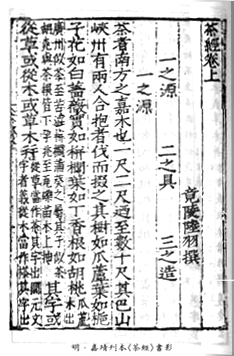
Chinese Cha Jing
c. 760 CE
Tang-dynasty scholar Lu Yu writes the Chajing (Classic of Tea). As the first comprehensive tea manual, it codifies cultivation and brewing methods, deeply influencing East Asian tea culture and later Japanese tea scholarship.
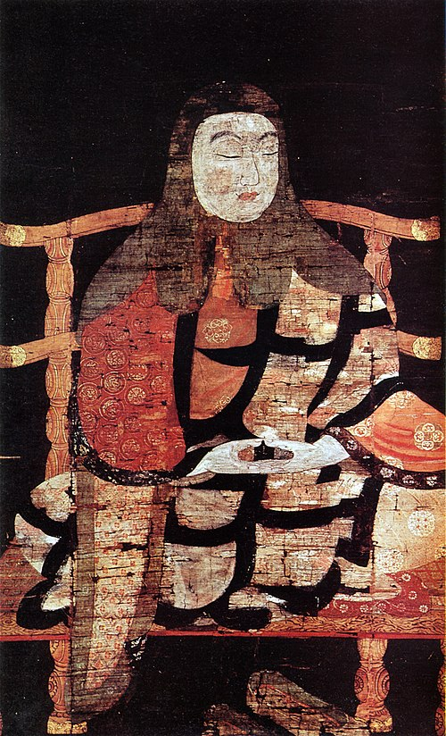
Tea arrives with Saichō and Kūkai
c. 805 CE
Heian-period monks Saichō (767–822) and Kūkai (774–835) return from Tang China with tea plants and seeds. They distribute the plants at the imperial court in Kyoto, making tea drinking fashionable among nobles and initiating cultivation in Japan.
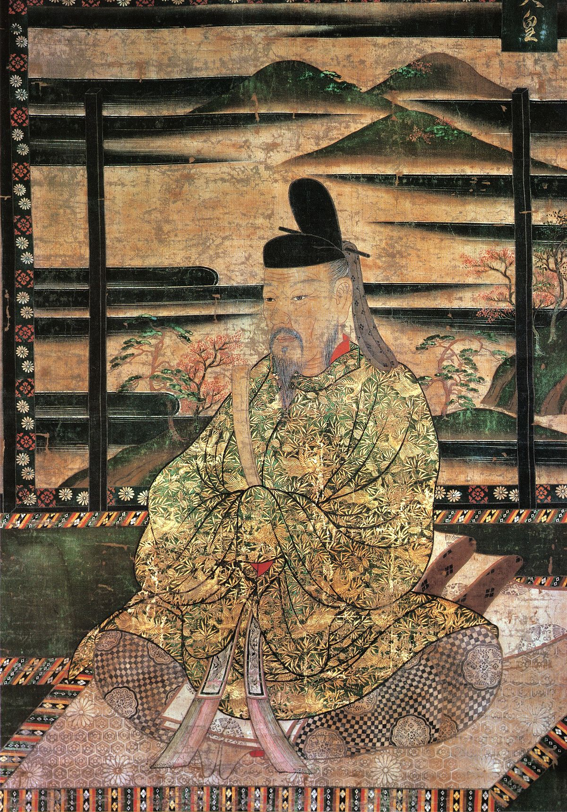
Emperor Saga and Eichū
815 CE
Buddhist monk Eichū serves tea to Emperor Saga in 815. Impressed, Saga orders the planting of tea gardens (including imperial palace grounds). This imperial endorsement kick-starts official tea cultivation and courtly tea ritual in Japan.
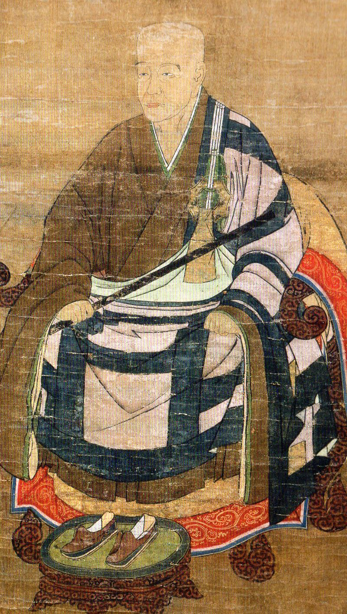
Eisai brings tea seeds
1191 CE
Zen monk Eisai returns from Song China with tea seeds and cultivates them in Kyushu and at Kōzan-ji temple in Kyoto (Tagano-o). He also introduces the Chinese practice of whisking powdered green tea. Eisai’s efforts establish the Uji tea region and the roots of the Japanese tea ceremony.
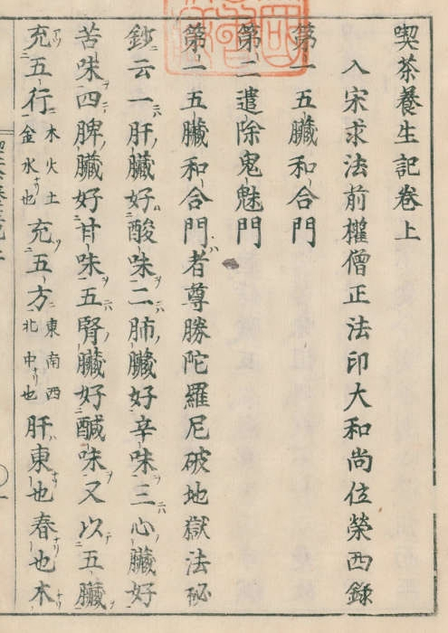
Kissa Yōjōki
1211 CE
Eisai publishes Kissa Yōjōki (“Drink Tea and Prolong Life”), Japan’s first tea treatise. The book extols tea’s health benefits, describes how to grow and process tea, and spreads tea drinking as a medicinal practice. It helps popularize tea among samurai and aristocrats.
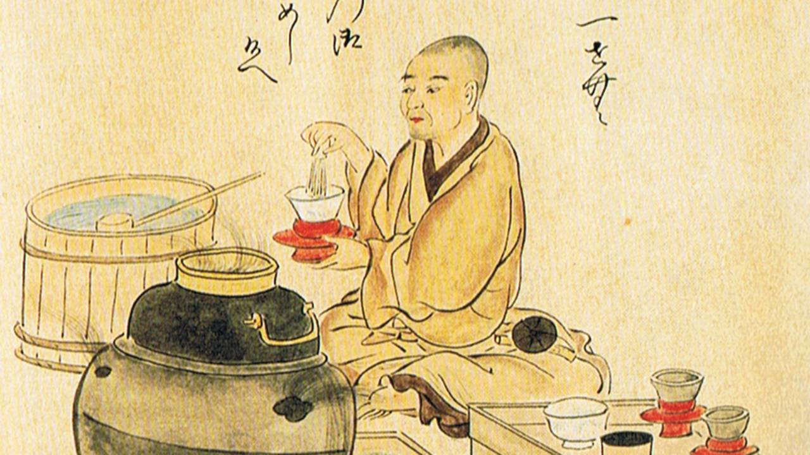
Tōcha contests
14th century
Competitive tea-tasting games (闘茶, tōcha) become a popular samurai pastime. Participants wager on distinguishing regional teas (traditionally Uji “honcha” vs. other “hicha”). These lavish events with prizes and spectacle deepen tea connoisseurship and boost demand for high-quality Uji tea.
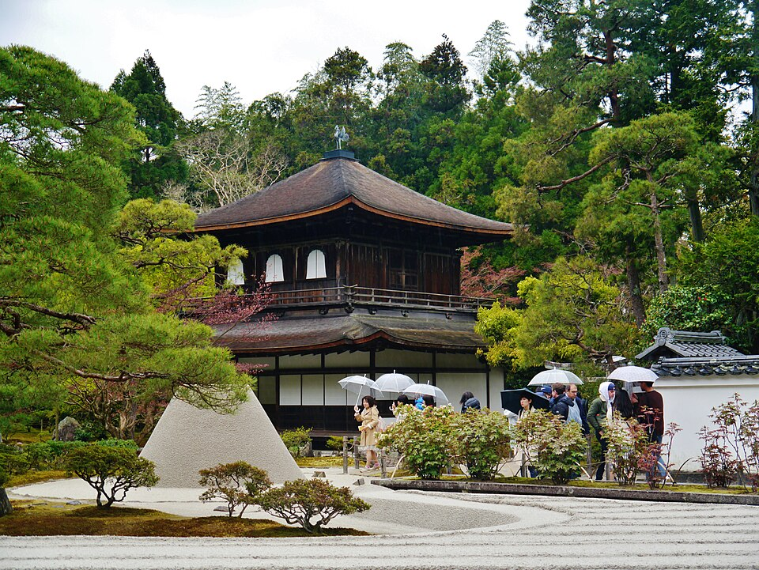
Uji Rokuen tea gardens
1397 CE
Shōgun Ashikaga Yoshimitsu founds the Golden Pavilion (Kinkaku-ji) and establishes the Six Tea Gardens of Uji (Uji Rokuen) to supply his tea ceremonies. By creating official plantations in Uji, Yoshimitsu elevates Uji as Japan’s premier tea-growing region. This state backing also leads to techniques like shading tea plants for finer flavor.
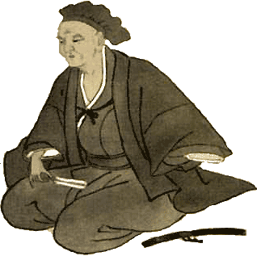
Wabi-cha and Murata Shukō
15th century
Retired Shōgun Ashikaga Yoshimasa (r. 1368–94) builds the first formal shoin-style tea room at Ginkaku-ji. His tea master Murata Shukō (Jukō) (1423–1502) pioneers the wabi-cha aesthetic, favoring simple, rustic Japanese tea wares alongside some Chinese objects. Shukō’s emphasis on austere beauty and intimacy in small tea huts (6×6 feet) spreads Chanoyu beyond the elite to merchants.
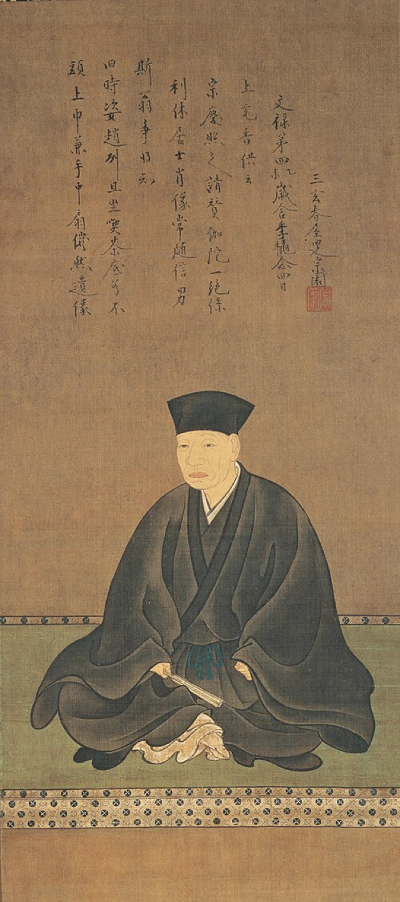
Sen no Rikyū’s chanoyu
1580s
Tea master Sen no Rikyū (1522–1591) becomes the tea advisor to warlords Oda Nobunaga and Toyotomi Hideyoshi. Rikyū codifies wabi-cha style: he designs the famed Taian tea house, simplifies tea utensils, and creates the nijiriguchi (crawl-in entrance). His understated, ritualized tea ceremony etiquette becomes the foundation of modern Japanese tea ceremony practice.
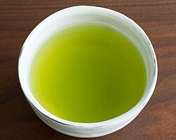
Sencha invented
1738 CE
Uji tea grower Nagatani Sōen develops a new sencha processing method (Ao-Seiho): he steams only the freshest leaves, hand-rolls and pan-dries them. The result is a bright green, fragrant loose-leaf tea. Sōen’s innovation yields a higher-quality sencha that soon spreads nationwide, making tea drinking common among townspeople (not just aristocrats).
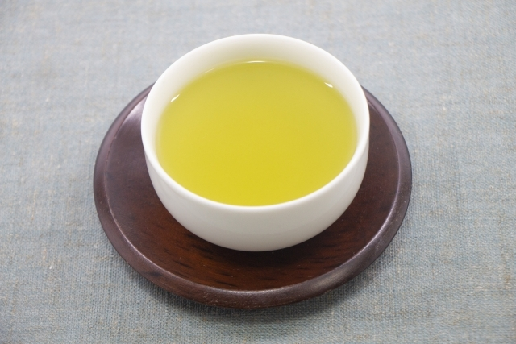
Gyokuro created
1835 CE
Kahei Yamamoto (sixth generation) of Kyoto perfects shaded cultivation to produce Gyokuro. By covering tea plants for weeks before harvest, Gyokuro leaves develop extra sweetness and theanine. This high-grade, umami-rich green tea becomes renowned as a luxury product, further diversifying Japan’s tea styles.
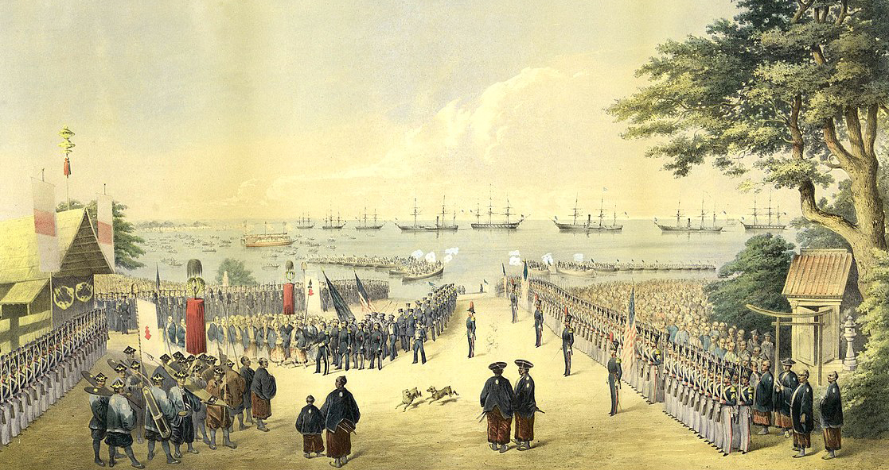
Tea exports begin
1858 CE
After Commodore Perry’s arrival (1853) Japan ends isolation. The Ansei Treaties (1858) open Japanese ports; tea is one of the first major export commodities. In a few decades Japan’s tea exports soar (at times exceeding 60% of production), integrating Japan into the global tea trade.
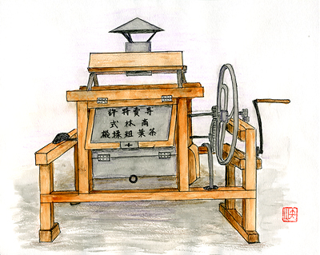
Modernization
Late 1800s
In the Meiji era (late 19th – early 20th c.), Japan modernizes tea production. Innovators like Kenzo Takabayashi invent rolling and processing machines that dramatically speed production. Hikosaburo Sugiyama develops the Yabukita cultivar in the early 1900s, whose high yield and quality make it the country’s most widely planted tea variety to this day.

Canned tea
1979–1985
Tea producer Ito En launches Japan’s first canned tea beverages. In 1979 it releases canned oolong tea, and in 1985 it introduces a nitrogen-flushed canned sencha. These ready-to-drink teas preserve fresh flavor without refrigeration, sparking a convenience boom. Canned green teas (like Oi Ocha) become ubiquitous in vending machines and stores, transforming everyday tea consumption.

PET bottled green tea
1990
Ito En becomes the first company to market green tea in PET plastic bottles. Branded as Oi Ocha, these chilled bottled teas make green tea more accessible, leveraging modern packaging. This innovation creates a huge domestic market for bottled tea and eventually spreads to global exports.

“Natural Clear” method
1996
To keep bottled green tea clear, Ito En patents its Natural Clear filtration (removing sediment called ori). By straining microscopic tea particles without harming flavor, they achieve crystal-clear bottled tea. This technological advance greatly improves the shelf appeal of PET green tea and is adopted industry-wide.

Heatable PET bottles
2000
Ito En develops the first PET bottle that can safely hold hot tea. By using a special high-barrier plastic, oxygen permeability and heat damage are minimized. Launched in 2000, heatable PET tea bottles allow vending-machine hot tea, expanding tea consumption opportunities even in cold seasons.

Modern market
2020s
In recent years Japan’s domestic green tea consumption has leveled off, while international demand grows. By 2022 Japan produced ~77,200 tons of tea and exported ~6,263 tons. Tea remains a cultural staple (with the traditional tea ceremony still practiced), but the industry now emphasizes efficiency, branding (like premium single-origin teas), and export growth.
 Second Brew
Second Brew